SmartTools Add-on Manual / Bundled Tool
Keymap Manager Manual
Version 1.0.0 / November 19, 2026 / For Blender 5.1.2
Keymap Manager is a tool included with SmartTools. A keymap is a table that assigns functions to keys. Blender has a great many shortcuts, and the same key is sometimes used for different functions. This add-on adds a section header called "Keymap Manager" to the "Keymap" screen in Preferences. Click a key on the keyboard picture to list the functions assigned to that key. You can also see which assignments take priority and which are hidden. You can also consolidate duplicates, search for free keys, and export, import, and save presets (settings saved under a name) of keymaps here. For how to install and localize the add-on, see the relevant chapter of the SmartTools Overall Specification.
1. What This Add-on Does
A tool included with SmartTools. Look up shortcuts from a keyboard-shaped screen, then find and fix overlaps (conflicts).
- Click a key on the keyboard picture to list the functions assigned to that key
- Toggle the Ctrl, Shift, Alt, and OS modifier keys (keys pressed together with another key) on the picture to look up S and Ctrl+S separately
- Look up the functions assigned to mouse buttons, the wheel, trackpad operations, and 3D mouse buttons
- Enter an operator ID (the internal name of a function, for example wm.save_mainfile) to show on the picture which keys that function is assigned to
- See whether each assignment is Effective, Partly Shadowed, Earlier Item First, Duplicate, or Disabled
- Give priority to a hidden assignment with a single button (this disables the assignments that take the key first)
- Edit an assignment's on / off state, key, and modifier keys right in the list
- Review duplicates whose location, function, key, on / off state, and operator settings are all identical in a confirmation dialog, then consolidate them
- List only the assignments that use the same key in the same location (conflicts)
- Search each category for candidates of shortcuts that are not yet used
- List assigned keys filtered by editor, mode, and text
- Export keymaps to a JSON file and import them
- Save, load, and delete keymaps as named presets
- You want to check whether a key is already in use before deciding on a new shortcut
- Pressing a key does not run the function you expect, and you want to know which assignment takes it first
- Installing an add-on added the same assignment twice, and you want to clean it up
- You want to take the shortcuts you changed to another PC
- You want to find a free key and assign it to a new function
At a Glance
This is how the screen changes when you use this add-on. Chapter 5 walks through the exact steps in the "Example" boxes for each feature.
ExampleClick a Key to Look Up Its Assignments(demonstrated on the Keymap screen in Preferences)
When you click a key and modifier keys on the keyboard picture, the functions assigned to that combination are listed below. You can look up each combination separately, such as Ctrl+S and Ctrl+Shift+S.


- Open "Preferences" from the "Edit" menu, and select "Keymap" on the left.
- Click the "Keymap Manager" section header at the very bottom to open it.
- On the keyboard picture, click "S", then click "Ctrl" to turn it on.
- Then click "Shift" as well to turn it on.
What to look for: In the first figure, "Ctrl" and "S" appear pressed, and "Save Blender File" is shown at the top of the list. Even with a Bevel modal row present, "Save Blender File" stays "Effective" (modal items are not counted). In the second figure, "Shift" also appears pressed, the header changes to "Key: Ctrl + Shift + S + Press", and the top of the list switches to "Save As".
2. Key Features
This chapter walks through the features unique to this add-on, using numbered callouts on each figure. The numbers in a figure match the numbered list below it. Click a figure to enlarge it. Each individual setting is described under its own heading in Chapter 5.
2-1. Look Up with the Keyboard PictureTop Feature
Blender has thousands of shortcuts, and searching the list in Preferences does not quickly tell you what a key is used for. With Keymap Manager, just click a key on the keyboard picture and all of that key's assignments are listed, with their priority order and status. Conversely, enter a function's internal name and that function's keys light up on the picture.
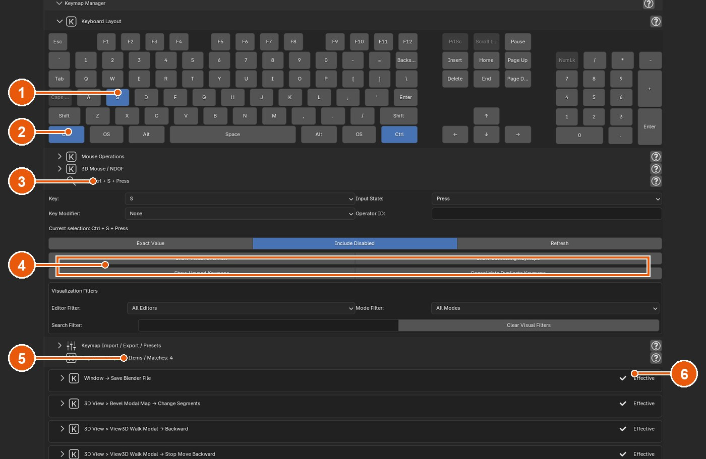
- 1Click a Key: Click a key on the picture to select it; it looks pressed (blue)
- 2Key Modifier: Ctrl, Shift, Alt, and OS toggle on and off with each click. You can look up S and Ctrl+S separately
- 3"Key:" Header: The key combination currently being looked up. You can also select the key and input state (Press and so on) directly here
- 4Display Switch: Switches to the visual overview, conflict, and unused displays (explained in the next 2 items)
- 5Match Count: The number of assignments that match the selected key
- 6Status: One of "Effective", "Partly Shadowed", "Earlier Item First", "Duplicate", or "Disabled". It tells you whether the assignment really works with that key
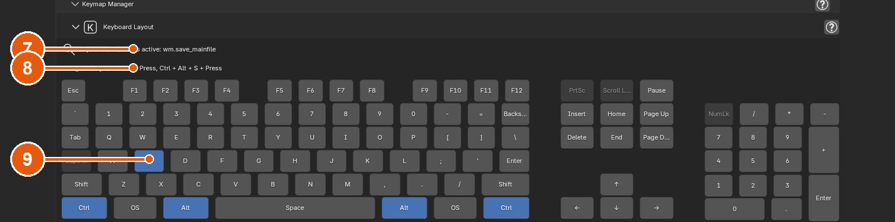
- 7Operator ID filter is active: A sign that you are searching by the function's internal name
- 8Assigned Keys: All of that function's keys are also listed as text (Ctrl + S and Ctrl + Alt + S)
- 9Keys on the Picture: S, Ctrl, and Alt look pressed, so you can see at a glance which keys they are
- Open "Keymap" in Preferences, and open the "Keymap Manager" section header.
- Click a key on the keyboard picture as in ①, and turn on the modifier keys in ② if needed.
- In the list at ⑤, look at that key's assignments and the status at ⑥. Open a row's triangle to edit the on / off state and keys right there.
- To find the keys from a function, enter its internal name in "Operator ID" (⑦ to ⑨). Leave it empty to return to the original display.
- A status other than "Effective" is a sign that in some situations another assignment works first even if you press that key. Which one comes first is shown in the next item, "Conflicts and Higher Priority".
- You can copy the internal name with the button to the right of "Operator ID" in the details.
- Gray keys that cannot be clicked (Caps Lock and so on) are keys that cannot be used for Blender shortcuts.
Settings in detail: 5-1. Keyboard Layout (Keyboard Picture), 5-4. Key: (Selected Key), 5-6. Registered Keymap Items / Match Count
2-2. Conflicts and Higher PrioritySee It in a Figure
When several functions use the same key, it becomes hard to tell which one works when you press it. "Show Conflicting Keymaps" groups and lists the assignments that use the same key in the same location, and shows with the status which one receives the key first. A key hidden behind an assignment in a different location can be brought out with a single button in the details.
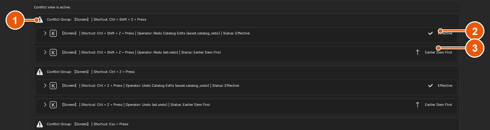
- 1Conflict Group: A box for each registered location and key
- 2Status "Effective": The assignment that receives the key first
- 3Status "Earlier Item First": The earlier item is tried first, and this one works in situations where that cannot run
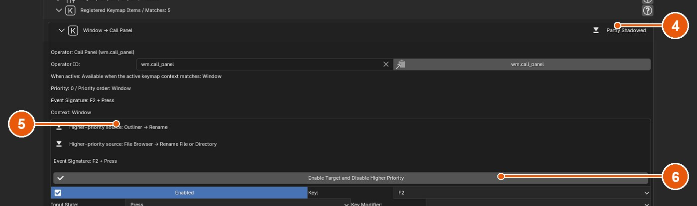
- 4Partly Shadowed: An assignment in a more limited location receives the key first there
- 5Higher-priority source: All the assignments that receive the key first are listed (here, rename in the Outliner and in the File Browser)
- 6Enable Target and Disable Higher Priority: Turns off all the higher-priority sources and turns this assignment on. After you click it, the status changes to "Effective"
- Click "Show Conflicting Keymaps".
- Look at ② and ③ of each group and decide which one to keep. Open a row's triangle to see its details and edit just as in the normal display.
- To make a "Partly Shadowed" assignment work everywhere, click ⑥ in the details.
- An assignment you turned off with ⑥ also stops working in the screens and modes where it originally works. To undo this, turn on "Enabled" in that assignment's details.
- "Consolidate Duplicate Keymaps" merges assignments with completely identical content into one. If you click "Cancel" in the confirmation dialog, nothing is changed.
Settings in detail: 5-7. Conflict Keymap Display, 5-6. Registered Keymap Items / Match Count
2-3. Visual Overview and Free KeysSee It in a Figure
"Keymap Visual Overview" shows keys that have assignments in blue on the picture and summarizes the counts for each key. "Unused Keymaps" is the reverse: it shows candidates for keys that are not yet used, for each category. Before adding your own shortcut, you can quickly find a free key.
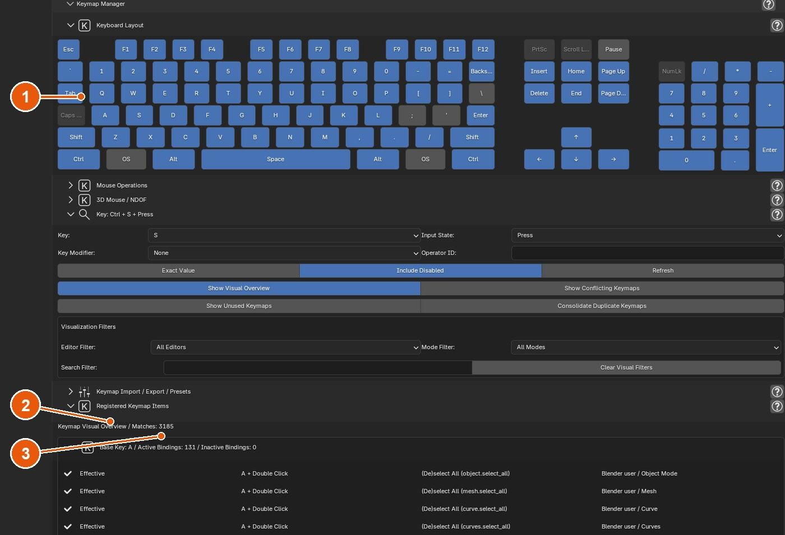
- 1Blue Keys: Keys that have assignments
- 2Match Count: The number of assignments after filtering (3185 here)
- 3Base Key Header: For each key, the counts of on and off assignments. Open it with the triangle to list them one per row
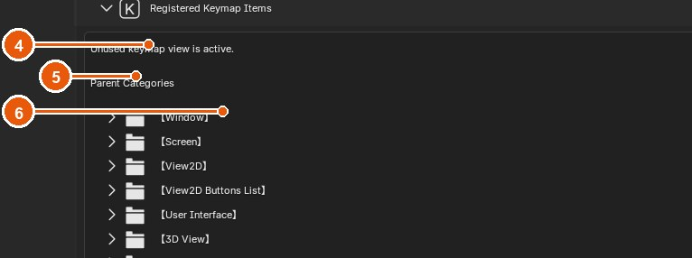
- 4Unused keymap view is active.: A sign that this display is active
- 5Parent Categories: The same order as the keymaps in Preferences. Open with the triangle to show candidates for free keys for each base key
- 6Category Row: Divided by place, such as [Window] and [Screen]
- Click "Show Visual Overview" for the visual overview, or "Show Unused Keymaps" for free keys. Click again to return.
- When you find a candidate in the unused display, return to the original display and click that key on the keyboard picture to check that it is not used elsewhere.
- Key groups are closed at first. Only the keys you open with the triangle are expanded.
Settings in detail: 5-9. Keymap Visual Overview, 5-8. Unused Keymap Display
3. Getting Started
How to install the add-ons, how to change the interface language, and how the N panel and the "?" help buttons work in every add-on are covered in the "SmartTools Overall Specification". Please read chapters 2 to 5 there first.
| ZIP to install | KeymapManager_1.0.0.zip |
|---|---|
| Name shown in Blender | キーマップマネージャー (“Keymap Manager” in Japanese) |
| Supported Blender | 5.1.2 |
4. Where to Find It
The section header called "Keymap Manager" inside "Keymap" in Preferences (Blender's settings window). It does not appear in the 3D Viewport Sidebar. The "?" help button to the right of the header opens a short usage help.
| Editors | Preferences |
|---|---|
| Tab | Keymap |
- From the top menu, open "Edit" and then "Preferences".
- Select "Keymap" in the left column.
- At the very bottom of the keymap screen, click the "Keymap Manager" section header to open it (it is closed at first).
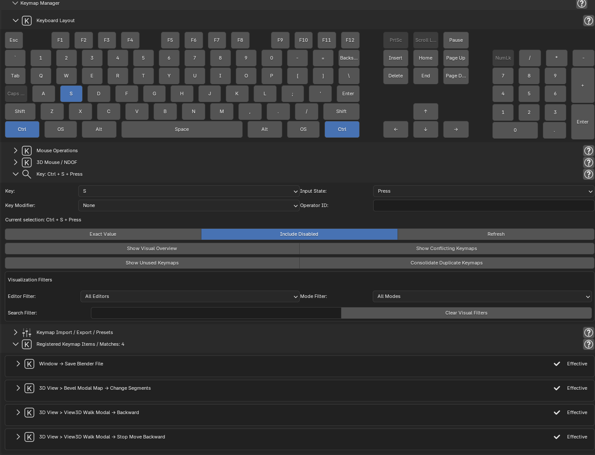
5. Features
Each heading is explained in order from the top of the panel. Click the "?" to the right of a heading to show the same explanation in Blender. The blue "Example" boxes show real operations on simple models such as Suzanne, with the 3D Viewport before and after.
5-1. Keyboard Layout (Keyboard Picture)
The part where buttons are arranged in the shape of a keyboard. Click a key to show its assignments in "Registered Keymap Items" below.
LocationAt the very top once "Keymap Manager" is open. It is open at first. Click the "?" help button to the right of the header to open the help for this part.
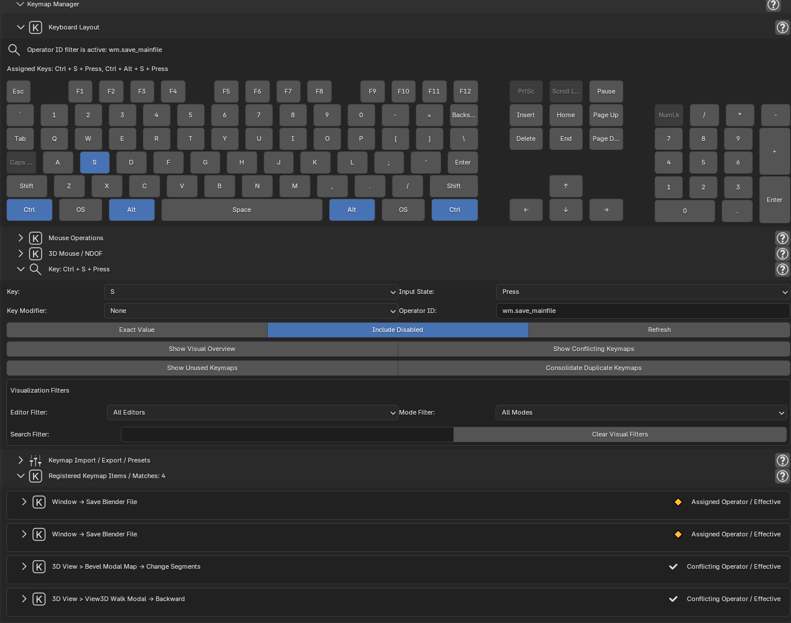
| Item | What it does |
|---|---|
| Letter, number, and symbol keys, F1 to F12, arrow keys, numpad keys, and so on | Click to select that key; it looks pressed. The matching assignments appear in the list below. Clicking a key clears "Operator ID" and returns to the normal list display. |
| Ctrl, Shift, Alt, OS (modifier keys) | Each click toggles between on and off. Only shortcuts that use the modifier keys you turned on are shown. With all of them off, assignments without modifier keys are shown. This lets you look up S and Ctrl+S separately. Assignments whose modifier key is "Any" are shown whether the key is on or off. |
| Gray keys that cannot be clicked (Caps Lock, PrtSc, Scroll Lock, NumLk, and so on) | Keys that cannot be used for shortcuts in Blender. They are shown only to match the keyboard's shape. |
| Operator ID filter is active, Assigned Keys | Shown only while you are typing in the "Operator ID" field. The keys assigned to that function look pressed on the picture, and are also listed as text in "Assigned Keys". |
ExampleClick a Key to Look Up Its Assignments(demonstrated on the Keymap screen in Preferences)
When you click a key and modifier keys on the keyboard picture, the functions assigned to that combination are listed below. You can look up each combination separately, such as Ctrl+S and Ctrl+Shift+S.
- Open "Preferences" from the "Edit" menu, and select "Keymap" on the left.
- Click the "Keymap Manager" section header at the very bottom to open it.
- On the keyboard picture, click "S", then click "Ctrl" to turn it on.
- Then click "Shift" as well to turn it on.
What to look for: In the first figure, "Ctrl" and "S" appear pressed, and "Save Blender File" is shown at the top of the list. Even with a Bevel modal row present, "Save Blender File" stays "Effective" (modal items are not counted). In the second figure, "Shift" also appears pressed, the header changes to "Key: Ctrl + Shift + S + Press", and the top of the list switches to "Save As".
5-2. Mouse Operations
The part where you select mouse buttons, the wheel, and pointer or trackpad operations, and look them up just like keys. The modifier keys you turned on also act as conditions.
LocationRight below "Keyboard Layout". It is closed at first. Click the "?" help button to the right of the header to open the help for this part.
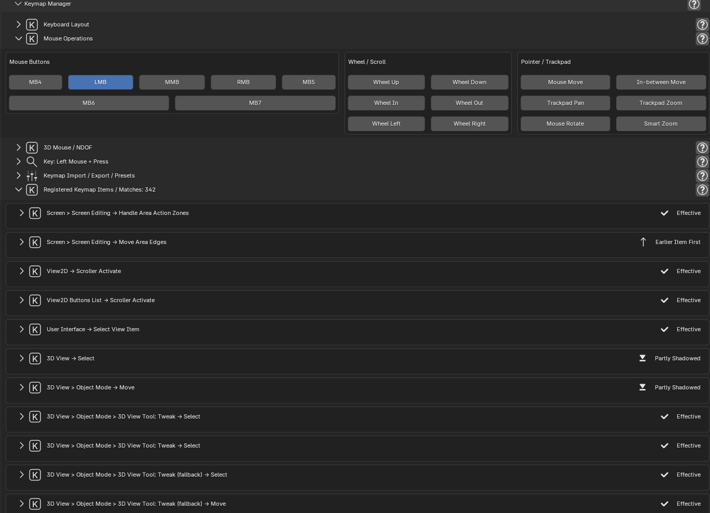
| Item | What it does |
|---|---|
| Mouse Buttons (left button, middle button, right button, Button 4 to Button 7) | The left, middle, and right buttons, plus the extra buttons. Click one to show the assignments for that operation in the list. |
| Wheel / Scroll (Wheel Up, Wheel Down, and so on) | Operations such as turning the wheel. Click one to show the assignments for that operation in the list. |
| Pointer / Trackpad (Mouse Move, Pad Pan, Mouse Rotate, and so on) | Operations such as moving the mouse and using the trackpad. Click one to show the assignments for that operation in the list. |
ExampleLook Up the Functions Assigned to Mouse Operations(demonstrated on the Keymap screen in Preferences)
When you click a "Mouse Operations" button, the assignments for that operation are listed, just as with keys.
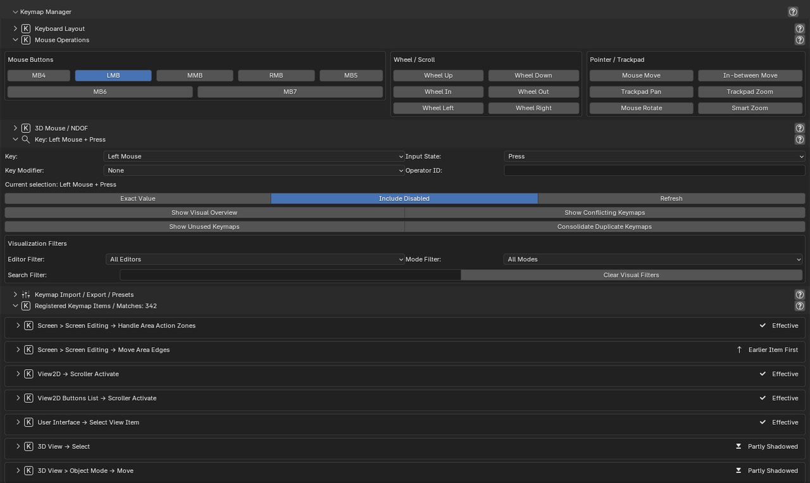
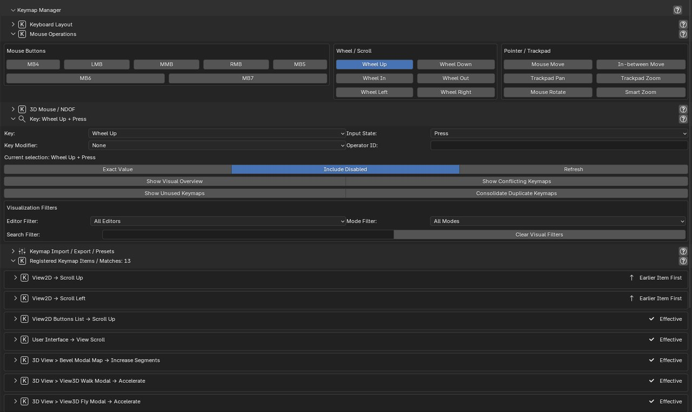
- Open "Preferences" from the "Edit" menu, and select "Keymap" on the left.
- Click the "Keymap Manager" section header at the very bottom to open it.
- Click the "Mouse Operations" triangle to open it.
- Click "LMB".
- Next, click "Wheel Up".
What to look for: The clicked button turns blue, and the "Key:" in the header and the contents of "Registered Keymap Items" change to those of that operation. In the header and the "Key" field, "LMB" is shown as "Left Mouse", while "Wheel Up" is shown with the same name.
5-3. 3D Mouse / NDOF
The part where you select 3D mouse buttons and look them up. NDOF refers to a dedicated input device for moving the orientation of 3D objects by hand.
LocationBelow "Mouse Operations". It is closed at first. Click the "?" help button to the right of the header to open the help for this part.
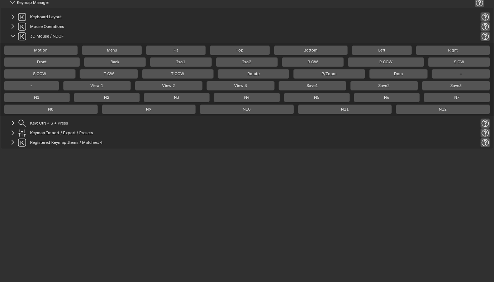
| Item | What it does |
|---|---|
| 3D mouse buttons (Motion, Menu, Fit, Top, N1, and so on) | Click one to show the assignments for that button in the list. |
5-4. Key: (Selected Key)
The part where you reselect the key to look up in a field and switch how the list is filtered and which kind of display is shown. After "Key:" in the header, the currently selected key and modifier keys are shown.
LocationBelow the keyboard and mouse parts. It is open at first. Click the "?" help button to the right of the header to open the help for this part.
| Item | What it does |
|---|---|
| Key | Select the key to look up from the list. This also changes when you click a key on the keyboard picture. Key names are written the same way as in Blender's keymap screen, such as [End], [Tab], and left click. |
| "Input State" | The input state, such as when pressed (Press) or released. It is used only when Exact Value is on. |
| Key Modifier | A separate key used in place of a modifier key. Use it only when looking up special assignments. |
| "Operator ID" | Enter the internal name of a function (for example wm.save_mainfile) to show that function's keys on the picture and list them together with the assignments that use the same keys. Leave it empty to return to normal. |
| Current Selection | Shown when "Operator ID" is empty in the normal list display. It is the key combination currently being looked up. |
| "Exact Value" | When on, only assignments in the state selected in "Input State" are shown. When off, all of them are shown: press, release, click, drag, and so on. It is off at first. Clicking a key on the keyboard picture again turns it off. |
| "Include Disabled" | When on, assignments that have been turned off are also shown in the list. It is on at first. |
| "Refresh" | Reloads the keymaps and rebuilds the list. Click it after changing a shortcut elsewhere in Preferences. |
| "Show Visual Overview" | Click to switch to a list that groups assigned keys by base key (the key without modifier keys). Click again to return. |
| "Show Conflicting Keymaps" | Click to group and list only the assignments that use the same key in the same registered location. Click again to return. |
| "Show Unused Keymaps" | Click to switch to a screen that searches each category for key candidates that are not yet used. Click again to return. |
| "Consolidate Duplicate Keymaps" | Finds assignments whose location, function, key (including drag direction), on / off state, and operator settings are all identical, and shows a confirmation dialog. Click "Consolidate" to keep only the first item of each group and delete the others. The assignments you keep work as they are. If an add-on's duplicate copy was partly edited, the edited row and the unedited assignment are both kept. "Cancel" changes nothing. If there are no duplicates, no confirmation dialog appears. |
| Editor Filter, Mode Filter, Search Filter under Visualization Filters | Filters the list in "Show Visual Overview" by editor, by mode (filtered by keymap name), and by text (function name, operator ID, registered location, key text). At first they are "All Editors" and "All Modes". |
| "Clear Visual Filters" | Resets the three filters. |
ExampleFind the Assigned Keys from a Function's Internal Name(demonstrated on the Keymap screen in Preferences)
When you enter a function's internal name in "Operator ID", that function's keys appear pressed on the keyboard picture and are also listed as text in "Assigned Keys".

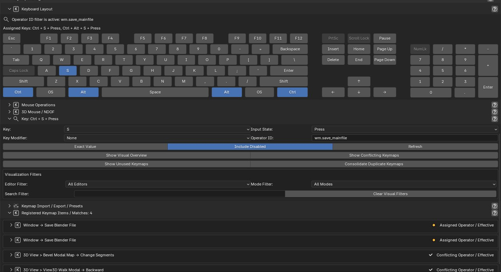
- Open "Preferences" from the "Edit" menu, and select "Keymap" on the left.
- Click the "Keymap Manager" section header at the very bottom to open it.
- In the "Key:" part, enter wm.save_mainfile in the "Operator ID" field.
What to look for: The Before figure shows only "Ctrl" and "S" selected. In the After figure, "Alt" also appears pressed on the keyboard picture, and "Operator ID filter is active: wm.save_mainfile" and "Assigned Keys: Ctrl + S + Press, Ctrl + Alt + S + Press" are shown at the top. In the list below, that function's assignments are marked "Assigned Operator", and other functions that use the same keys are marked "Conflicting Operator".
ExampleConsolidate Duplicate Assignments(demonstrated on the Keymap screen in Preferences)
When the same assignment has been added twice, for example by an add-on, the status of the later row shows "Earlier Item First". You can merge them into one with "Consolidate Duplicate Keymaps".
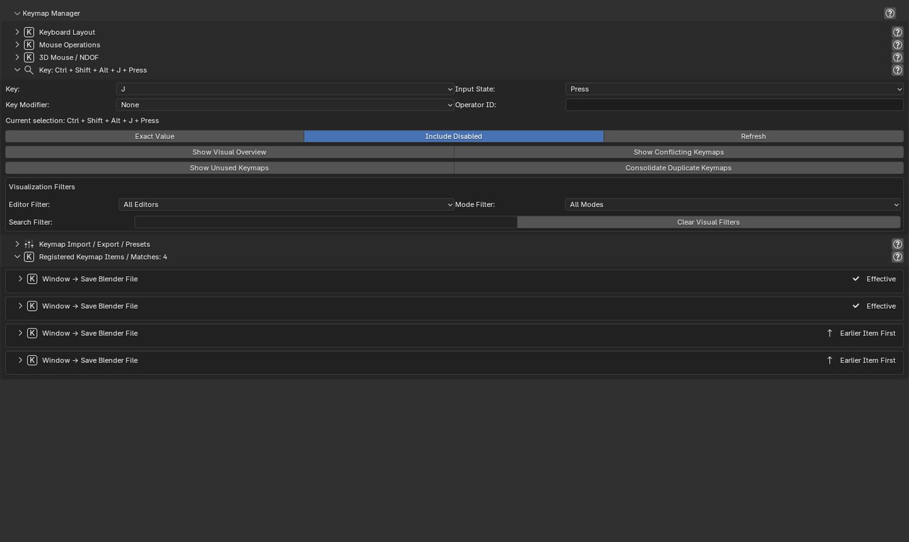
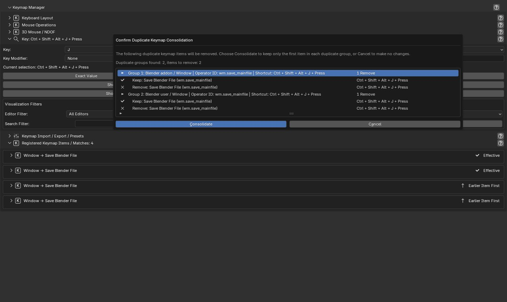
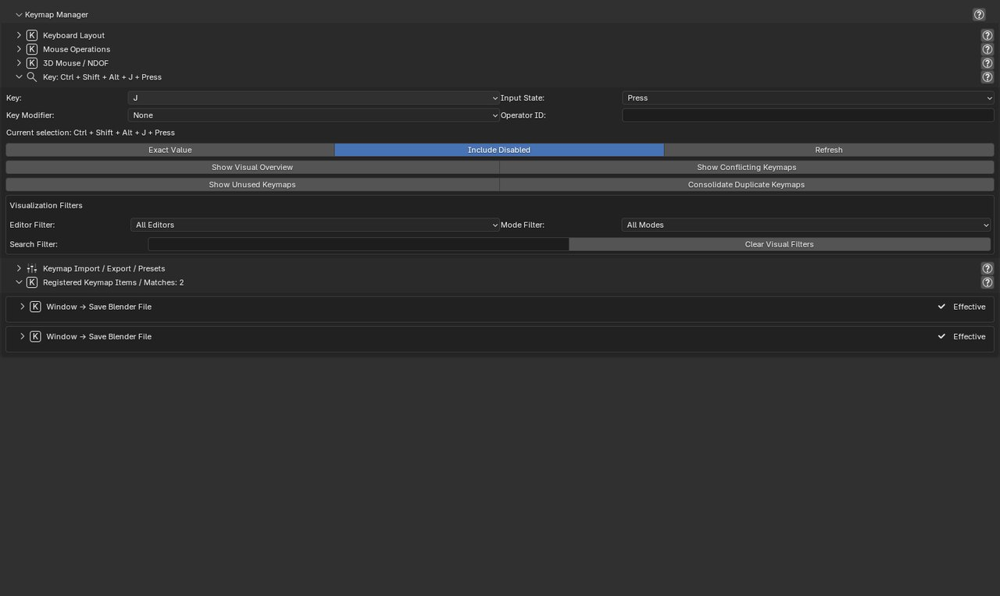
- Open "Preferences" from the "Edit" menu, and select "Keymap" on the left.
- Click the "Keymap Manager" section header at the very bottom to open it.
- On the keyboard picture, click the key you want to check ("J" in the figure) and "Ctrl", "Alt", and "Shift".
- In the "Key:" part, click "Consolidate Duplicate Keymaps".
- In the confirmation dialog, check "Keep" and "Remove", and click "Consolidate".
What to look for: In the figures, the same assignment has been added twice to Ctrl + Alt + Shift + J on the add-on side as a test. An add-on's assignments appear on two rows, the add-on side and the user-side copy, so the first figure shows four "Save Blender File" rows with "Matches: 4", and the status of the last two rows is "Earlier Item First". The second figure is the confirmation dialog: the two groups, add-on side and user side, each list one "Keep" and one "Remove", and it shows "items to remove: 2". The third figure is after "Consolidate": as shown in the confirmation dialog, the two "Keep" rows remain, it shows "Matches: 2", and both statuses are "Effective". If your everyday Blender has no duplicates, the confirmation dialog does not appear.
5-5. Keymap Import / Export / Presets
The part where you export keymaps to a file, import them, and save them under a name.
LocationBelow "Key: …". It is closed at first. Click the "?" help button to the right of the header to open the help for this part.
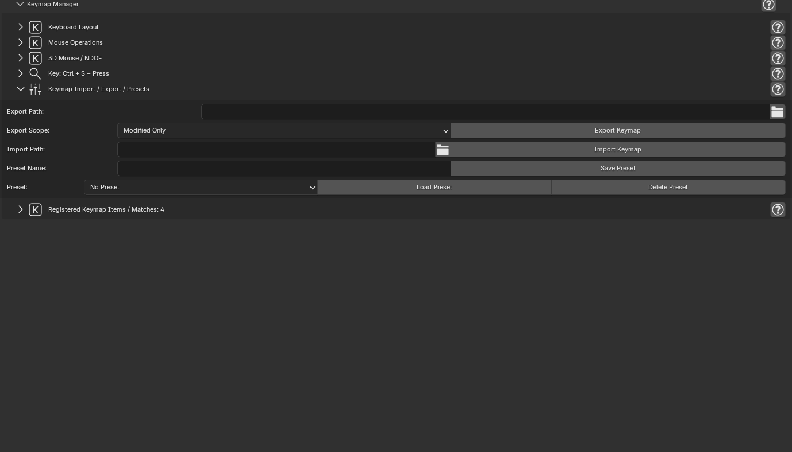
| Item | What it does |
|---|---|
| "Export Path" | The location of the JSON file to export. If you export with this left empty, the file is saved with a timestamped name in the keymap_manager_exports folder inside Blender's user settings folder. |
| "Export Scope" | "Modified Only" exports only the assignments that differ from Blender's defaults (assignments not in the defaults, and assignments whose on / off state was changed). "All Keymaps" exports everything. It is "Modified Only" at first. |
| "Export Keymap" | Runs the export. The location where the file was saved is entered in "Export Path". The file also includes modal assignments, drag directions, and operator settings. |
| "Import Path" | Select the JSON file to import. |
| "Import Keymap" | Adds the assignments in the file to the current keymaps. Existing assignments are not removed. If some parts could not be imported, the count is shown in the completion message. |
| "Preset Name" | Enter the name of the preset to save. |
| "Save Preset" | Saves all of the current keymaps under that name in the keymap_manager_presets folder inside Blender's user settings folder. |
| "Preset" | Select a saved preset. When nothing is selected, it shows "No Preset". |
| "Load Preset" | Adds the assignments of the selected preset to the current keymaps. |
| "Delete Preset" | Deletes the file of the selected preset. |
ExampleExport Your Shortcuts to a File and Import Them(demonstrated on the Keymap screen in Preferences)
When you export with "Modified Only", only the assignments you added yourself are saved to the file. When you import it, those assignments come back.

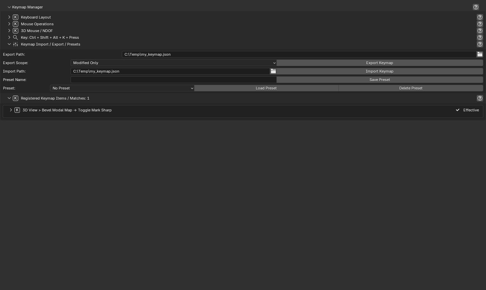
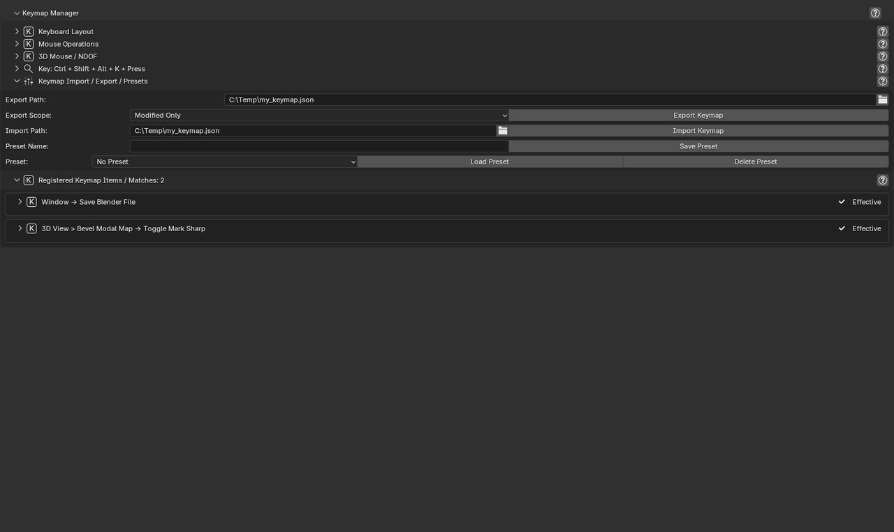
- Open "Preferences" from the "Edit" menu, and select "Keymap" on the left.
- Click the "Keymap Manager" section header at the very bottom to open it.
- On the keyboard picture, click "K", "Ctrl", "Alt", and "Shift" to show the assignment you added yourself in the list.
- Open the "Keymap Import / Export / Presets" triangle.
- Set "Export Scope" to "Modified Only", and click "Export Keymap".
- In "Import Path", select the file you exported, and click "Import Keymap".
What to look for: In the figures, "Save Blender File" has been added to Ctrl + Alt + Shift + K as a test (you add it in Blender's keymap screen). The file location is an example. The first figure shows the export, with the file location entered in "Export Path". The second figure shows the added assignment deleted, standing in for another PC (the remaining row is Blender's built-in Bevel row). The third figure shows the result after importing: the "Save Blender File" row is back, and "Matches" has increased from 1 to 2.
5-6. Registered Keymap Items / Match Count
The part where the assignments of the selected key (or function) are listed, one box per assignment. The header shows the count, such as "Match Count: 4". Switching the kind of display changes what is shown here.
LocationAt the very bottom of the panel. It is open at first. Click the "?" help button to the right of the header to open the help for this part.
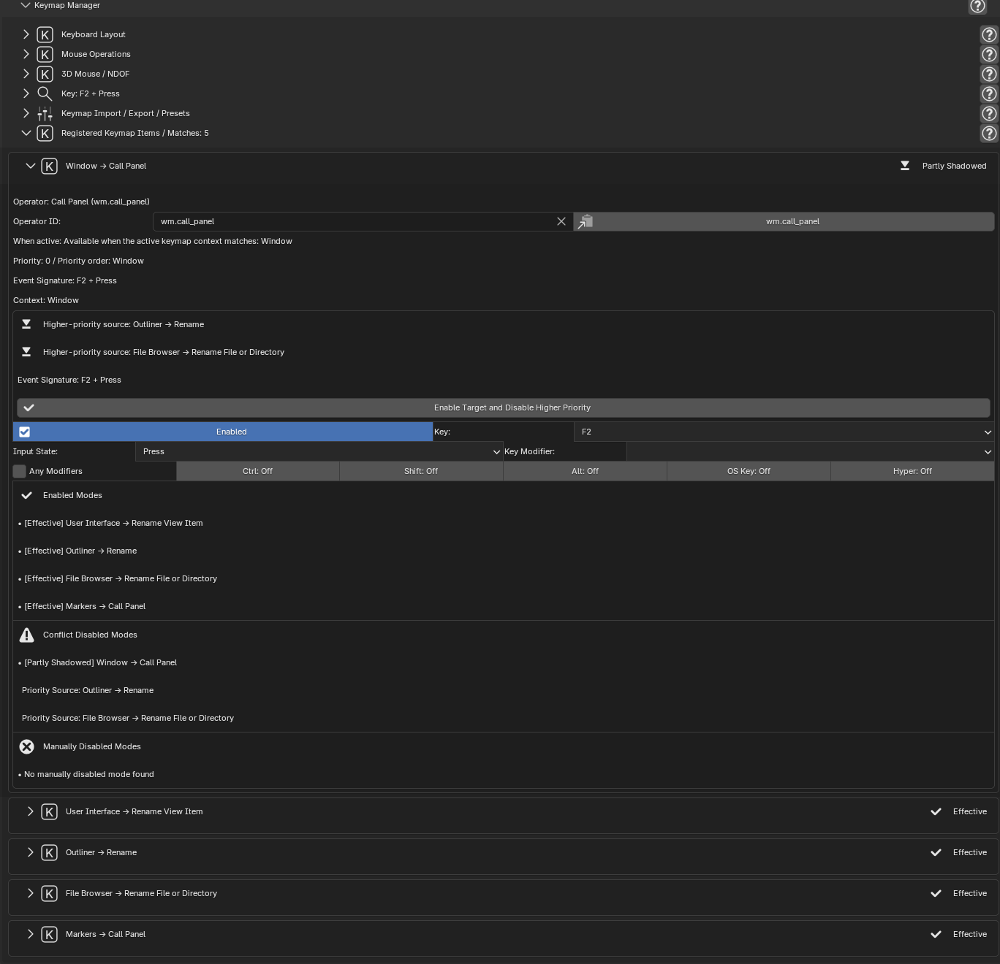
| Item | What it does |
|---|---|
| First row of each item | The left side shows "registered location → function name" and the right side shows the status. Use the triangle on the left to open and close the detailed view. |
| When two rows with the same content appear | A key added by an add-on appears in two rows: the add-on's item and the user-side copy. They are the same assignment, so the status does not become "Duplicate". When you restore the copy, the saved enabled / disabled state is also restored on the add-on-side row whose registered location, function, key, and operator settings match. The state of other assignments is not changed. |
| Status "Effective" | No assignment that receives this key first was found. |
| Status "Partly Shadowed" | In screens and modes where both are active, another assignment in a more limited location receives the key first. In all other situations it works. It appears only for assignments that are active at the same time. Assignments in other editors or modes, and modal keymaps (keymaps that work only while a function is running), are not counted. |
| Status "Earlier Item First" | An earlier item in the same location uses the same key and is tried first. If that earlier item cannot run in that situation, this item works. |
| Status "Duplicate" | Another assignment with the same priority uses the same key. |
| Status "Disabled" | The assignment is turned off. It does not work until you turn it on. |
| Assigned Operator, Conflicting Operator | Added before the status when you are looking up by "Operator ID". It indicates whether the item is the function you are looking up or another function that uses the same key. |
| Operator, Operator ID in the details | The name and the internal name of the function. Click the button to the right of the internal name field, which shows the internal name, to copy the internal name. On modal rows, "Modal Value" is shown instead of the internal name field and the copy button. Click it to open a search list where you can reselect the action performed by that key. |
| When active, Priority, Priority order, Event Signature, Context in the details | These show which screens and modes it works in, the priority level and order, the combination of key and modifier keys, and the registered location. |
| "Enable Target and Disable Higher Priority" | Appears in the details only when the status is "Partly Shadowed". It turns off all the assignments that receive the key first (all listed under "Higher-priority source") and turns this assignment on. After you click it, the status changes to "Effective". The assignments you turned off also stop working in the screens and modes where they originally work. To undo this, turn on "Enabled" in their details. |
| Enabled, key, input state, Key Modifier | Edit this assignment's on / off state, key, input state, and Key Modifier right there. Only Key Modifier is shown in English. |
| Any Modifiers, Ctrl, Shift, Alt, OS key, Hyper | The modifier key conditions. Turning on "Any Modifiers" makes it ignore modifier keys. Buttons such as Ctrl cycle with each click: off (not pressed), on (pressed), then any (either is fine). |
| Enabled Modes, Conflict Disabled Modes, Manually Disabled Modes | Lists the assignments of the same key in three groups: those that work, those hidden by a conflict, and those you turned off yourself. |
ExampleOpen a List Item to View Its Contents or Turn It Off(demonstrated on the Keymap screen in Preferences)
When you open the triangle of a list item, you can see which screen it works in, its key, its input state, and so on, and edit them right there.
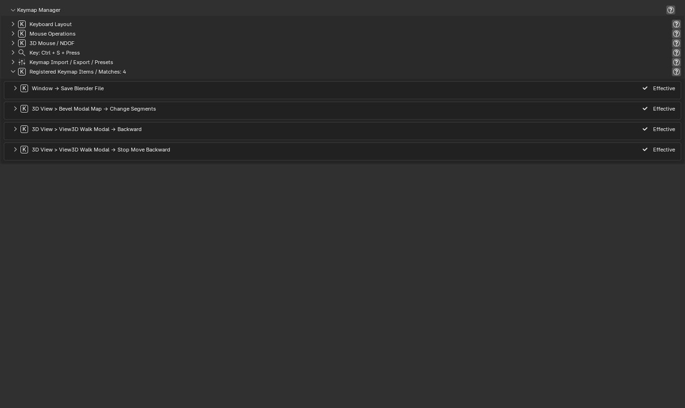
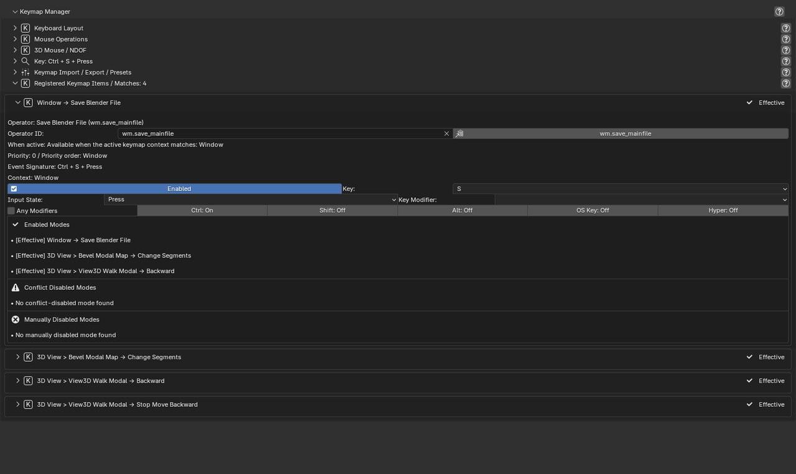
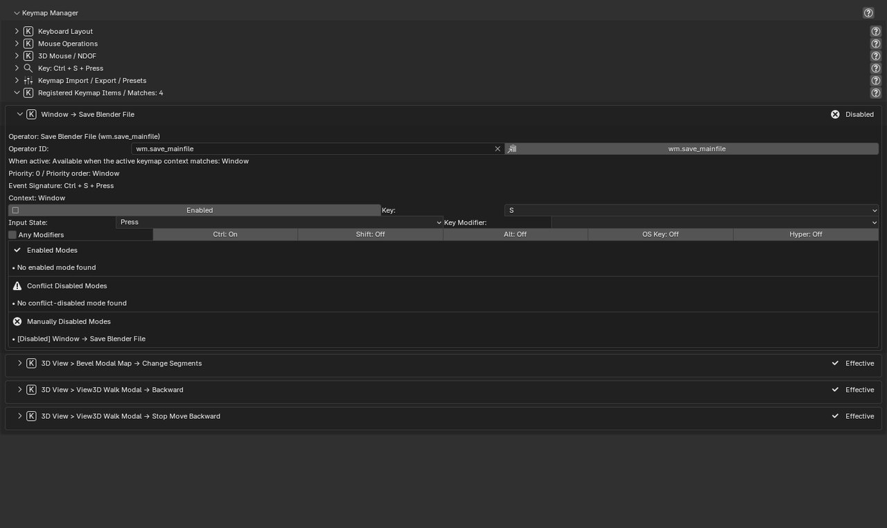
- Open "Preferences" from the "Edit" menu, and select "Keymap" on the left.
- Click the "Keymap Manager" section header at the very bottom to open it.
- On the keyboard picture, click "S" and "Ctrl".
- Click the triangle on the left of the "Window → Save Blender File" row to open it.
- In the details, turn off "Enabled".
What to look for: When it is open, the "When active", "Context", and "Event Signature" rows and the "Key" and "Input State" fields appear. When you turn off "Enabled", the status on the right of the row changes from "Effective" to "Disabled".
ExampleSwitch the Priority of F2(demonstrated on the Keymap screen in Preferences)
When another assignment receives the same F2 first, the status shows "Partly Shadowed". With a single button, you can turn off all the assignments that receive it first and give priority to the selected assignment.
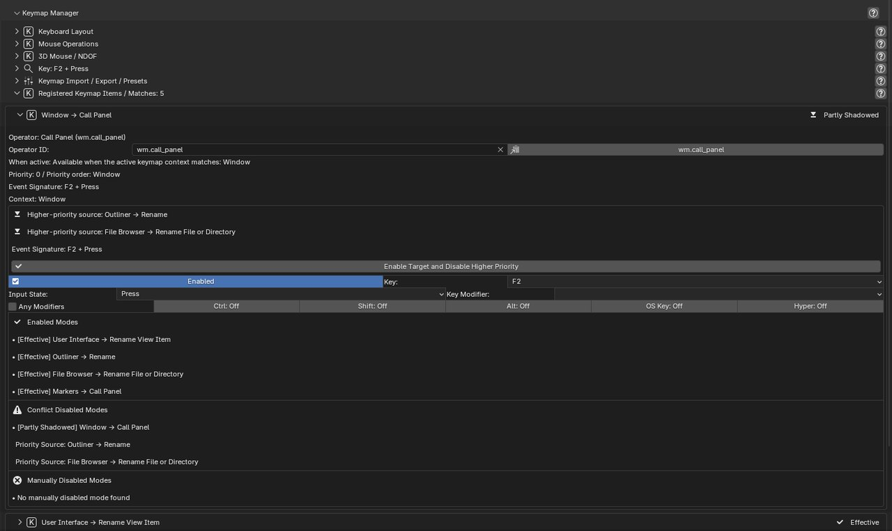
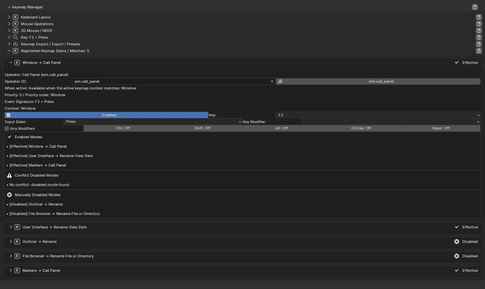
- Open "Preferences" from the "Edit" menu, and select "Keymap" on the left.
- Click the "Keymap Manager" section header at the very bottom to open it.
- On the keyboard picture, click "F2".
- Click the triangle on the left of the item whose status is "Partly Shadowed" to open it.
- Check "Higher-priority source", and click "Enable Target and Disable Higher Priority".
What to look for: In the Before figure, the status of "Window → Rename Active Item" is "Partly Shadowed", and "Higher-priority source" lists two rows: the Outliner's "Rename" and the File Browser's "Rename File or Directory". In the After figure, the status of the opened item has changed to "Effective", and "Higher-priority source" and the button are gone. In the list below, the Outliner and File Browser rows have become "Disabled" and moved to "Manually Disabled Modes". To restore them, turn on "Enabled" in the details of the items you turned off.
ExampleOpen the Short Help with the "?" Help Button(demonstrated on the Keymap screen in Preferences)
When you click the "?" help button to the right of each part's section header, a short explanation of how to use that part opens.

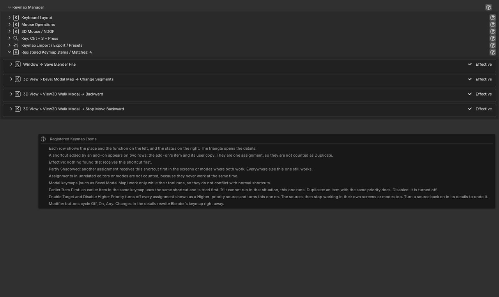
- Open "Preferences" from the "Edit" menu, and select "Keymap" on the left.
- Click the "Keymap Manager" section header at the very bottom to open it.
- Click the "?" help button to the right of the "Registered Keymap Items" section header.
What to look for: You can read right there what the status words mean and what happens when you click each button.
5-7. Conflict Keymap Display
What "Registered Keymap Items" shows after you click "Show Conflicting Keymaps". Assignments that use the same key in the same registered location are gathered into boxes, one per "Conflict Group".
LocationInside "Registered Keymap Items".
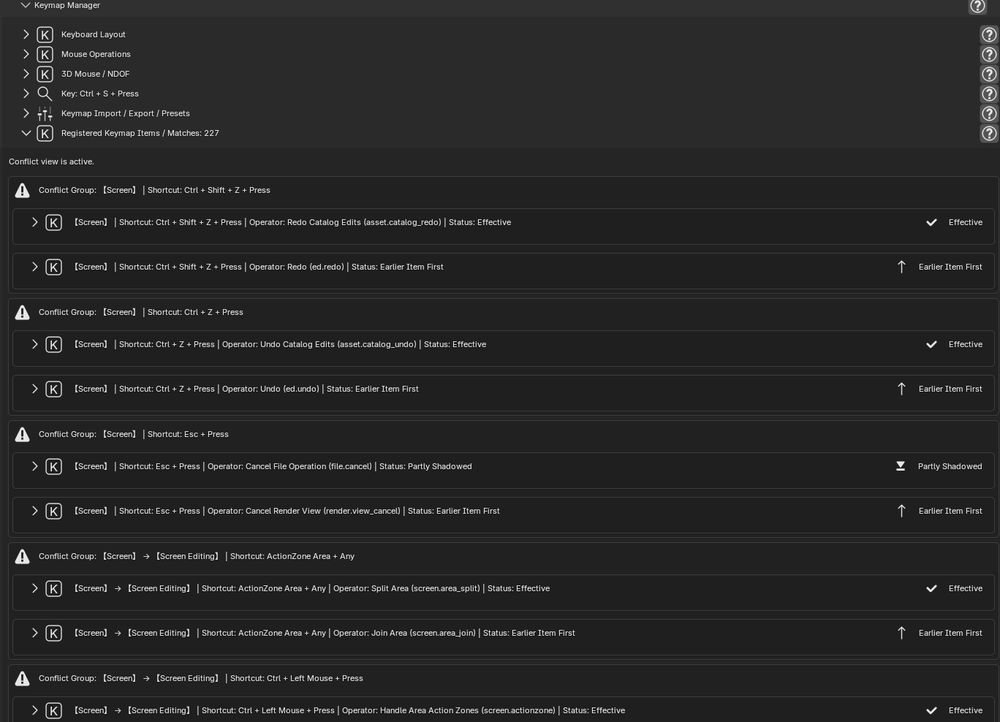
| Item | What it does |
|---|---|
| The "Conflict view is active." row at the top | Shows that this display is active. "Match Count" in the header is the number of conflicting assignments. |
| "Conflict Group" | The header of a box. It shows the registered location and the "Key" (shortcut). |
| First row of each item | The registered location, "Key", "Operator" (function name and internal name), and "Status" appear in one row. For "Status", the one that receives the key first shows "Effective" or "Partly Shadowed", and the one tried later shows "Earlier Item First" and so on. Open the details with the triangle and you can edit just as in the normal display. |
ExampleList the Assignments That Use the Same Key(demonstrated on the Keymap screen in Preferences)
When you click "Show Conflicting Keymaps", only the assignments that use the same key in the same registered location are listed, divided into groups.
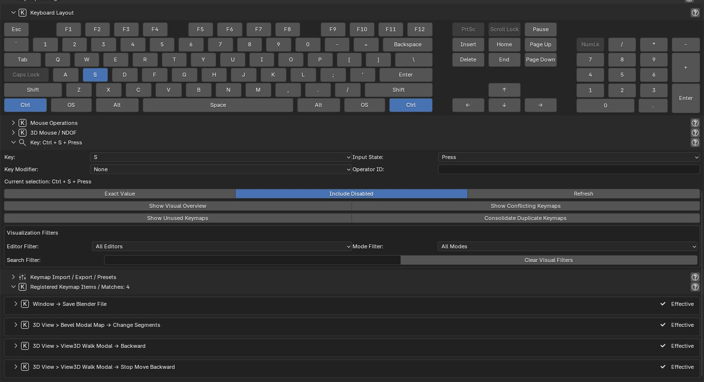
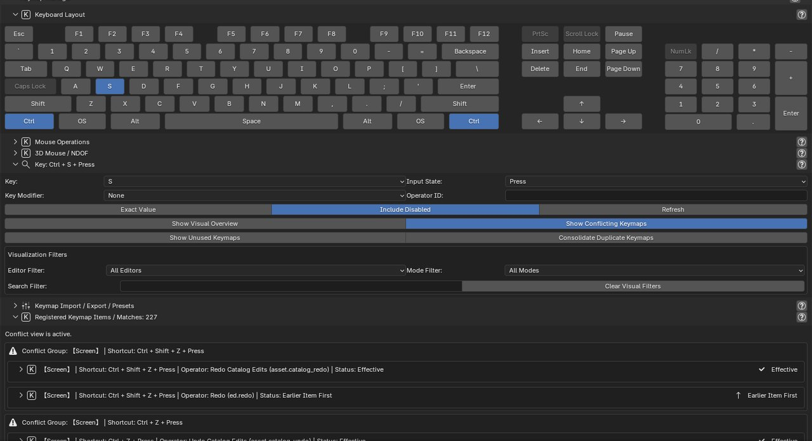
- Open "Preferences" from the "Edit" menu, and select "Keymap" on the left.
- Click the "Keymap Manager" section header at the very bottom to open it.
- In the "Key:" part, click "Show Conflicting Keymaps".
What to look for: In the After figure, headings such as "Conflict Group: [Screen] | Key: Ctrl + Shift + Z + Press" are listed under "Conflict view is active.", and the assignments that use the same key are grouped together. On the right of each row, how that assignment is currently treated is shown, such as "Effective" or "Earlier Item First".
5-8. Unused Keymap Display
What is shown after you click "Show Unused Keymaps". When you select a category (such as 3D Viewport or Window, where keymaps are registered), candidates for keys that are not used in that classification are shown. Candidates are checked only within the selected classification. Even within the same 3D Viewport, a key may be used in another classification (such as Object Mode).
LocationInside "Registered Keymap Items".
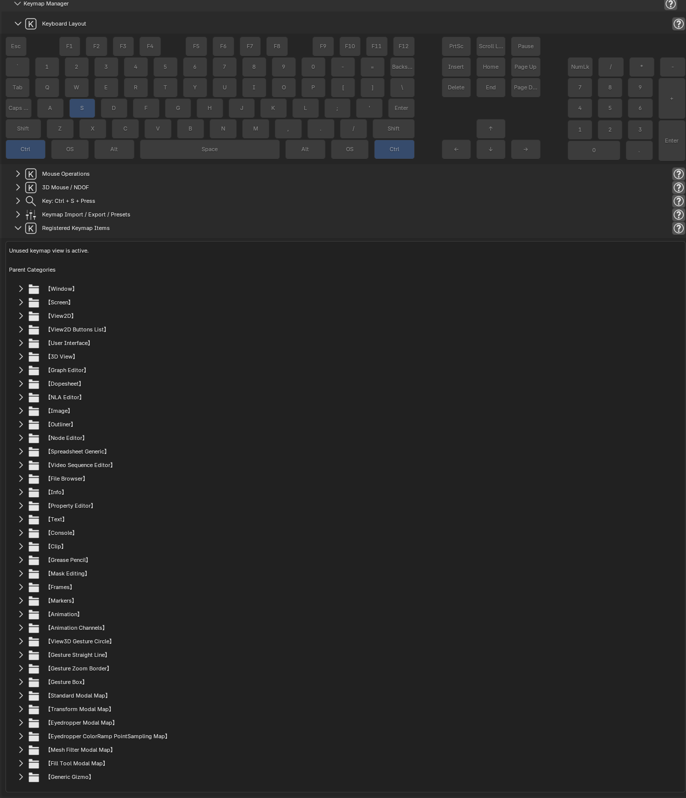
| Item | What it does |
|---|---|
| "Parent Categories" | They are listed in the same order as the keymaps in Preferences. Open them with the triangle on the left. If there is only one classification inside, the candidates appear as soon as you open it. |
| "Subcategories" | Shown when a parent category has several classifications inside. Click one to show the candidates there. |
| "Unused Shortcut Candidates" | Candidates for free keys in the selected classification. They are grouped by "Base Key" (the key without modifier keys), with the combinations with modifier keys listed inside. The base key groups are closed at first. Before using a candidate, click "Show Unused Keymaps" again to return to the original display and click that key on the keyboard picture to check whether it is used in other classifications. |
ExampleFind Free Keys in 3D View (Global)(demonstrated on the Keymap screen in Preferences)
When you click "Show Unused Keymaps" and select a classification, candidate keys that are not yet used in that classification are shown by base key.
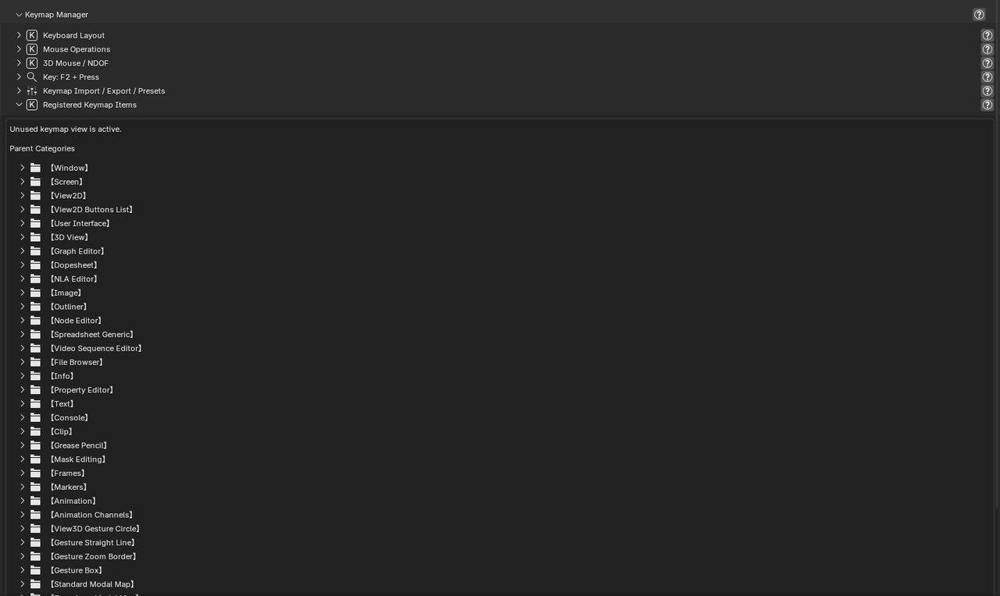
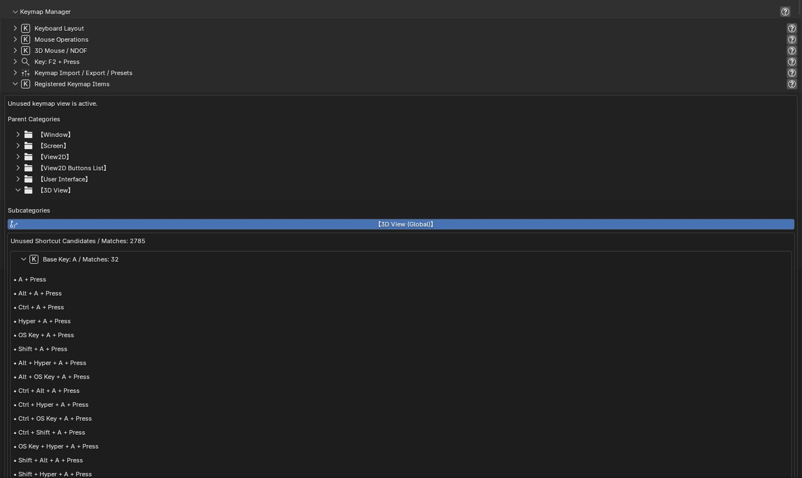
- Open "Preferences" from the "Edit" menu, and select "Keymap" on the left.
- Click the "Keymap Manager" section header at the very bottom to open it.
- In the "Key:" part, click "Show Unused Keymaps".
- In "Parent Categories", open the [3D View] triangle.
- In "Subcategories", click [3D View (Global)], and open the "Base Key" triangle.
- When you find a key you want to use, click "Show Unused Keymaps" again to return to the original display, then click that key on the keyboard picture to check whether it is used in other classifications.
What to look for: The Before figure shows only the "Parent Categories" list. In the After figure, the number of "Unused Shortcut Candidates" in the selected classification is shown, and opening a base key lists the free combinations. Candidates are checked only within the selected classification. As with "A + Press" in the figure, a key may be used in another classification (such as Object Mode) even in the same 3D Viewport.
5-9. Keymap Visual Overview
What is shown after you click "Show Visual Overview". Assigned keys are grouped by base key, and you view the result filtered with "Visualization Filters".
LocationInside "Registered Keymap Items".
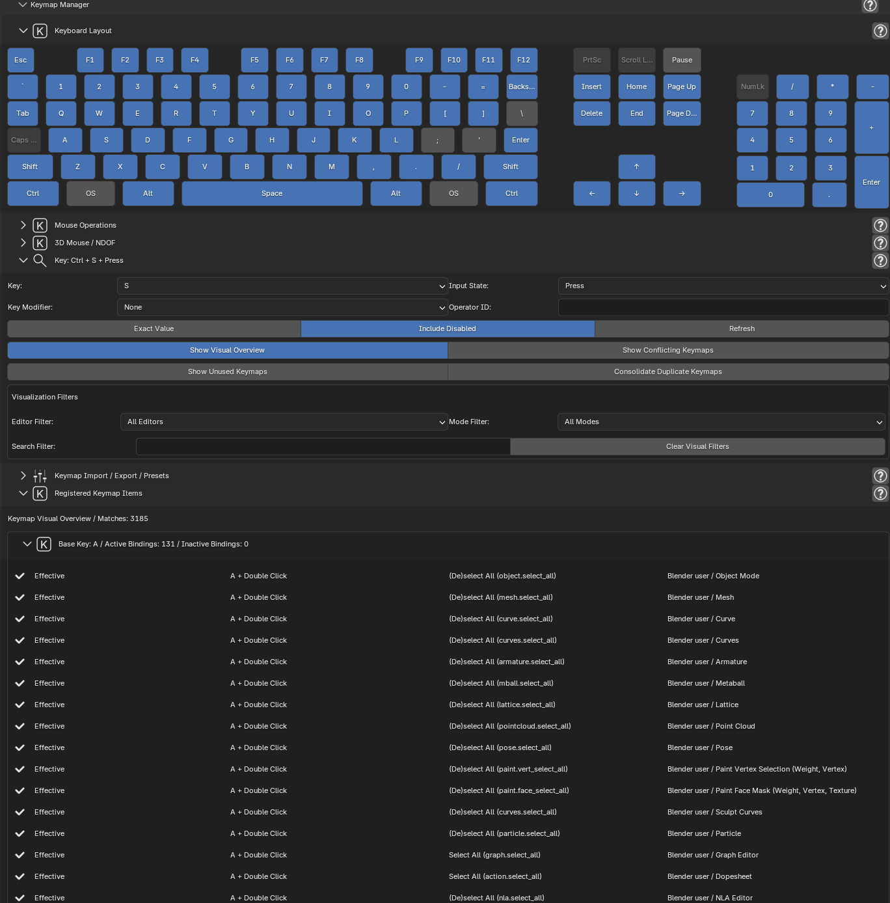
| Item | What it does |
|---|---|
| Keymap Visual Overview / Match Count | The number of assignments after filtering. |
| Header of each key (Base Key, Active Bindings, Inactive Bindings) | For each key, the counts of on assignments and off assignments are shown. Open it with the triangle to show the status, key, function name, and registered location, one per row. Key groups are closed at first. |
ExampleView Assigned Keys Grouped by Key(demonstrated on the Keymap screen in Preferences)
When you click "Show Visual Overview", the display switches to a list that groups the assigned keys by base key.

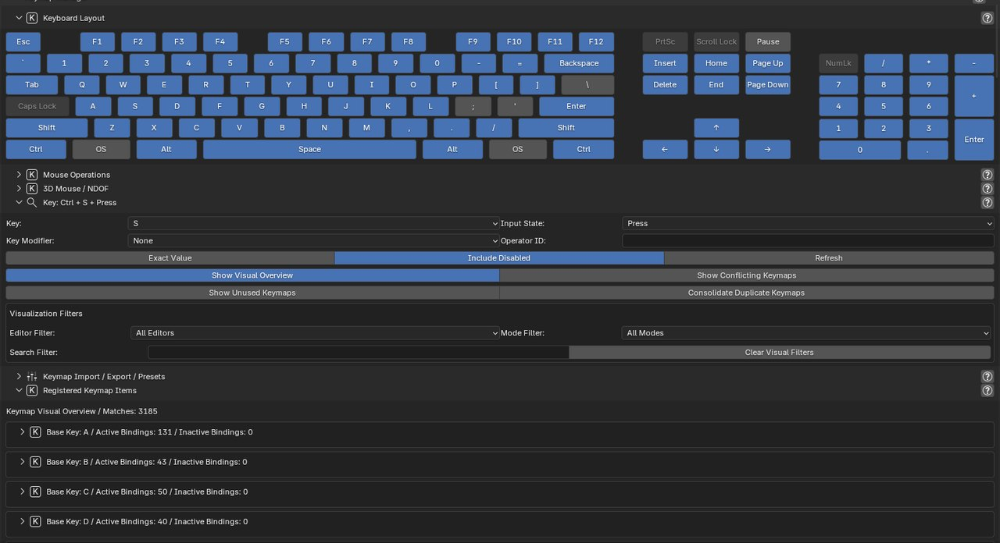
- Open "Preferences" from the "Edit" menu, and select "Keymap" on the left.
- Click the "Keymap Manager" section header at the very bottom to open it.
- In the "Key:" part, click "Show Visual Overview".
What to look for: In the After figure, keys that have assignments are colored blue on the keyboard picture, and the list below has changed to rows that sum up the number of assignments for each key, such as "Base Key: A / Active Bindings: 131 / Inactive Bindings: 0".
6. Common Tasks
Find What a Key Is Used For
See all the assignments of a key such as Ctrl+S
- Open "Keymap Manager" in "Keymap" in Preferences.
- In "Keyboard Layout", click Ctrl to turn it on.
- Click the S key.
- The Ctrl+S assignments are listed in "Registered Keymap Items" below. "Match Count" in the header is the count.
- Items with the status "Effective" are the assignments that receive that key. When there are several "Effective" items, each works in its own screen or situation. The one that works in normal operation is the row whose registered location is Window, 3D Viewport, or similar.
Result: You can see the functions that use that key, and which ones work and which are hidden.
Find a Function's Shortcut
Learn which keys a function is assigned to
- In the "Key: …" part, enter the function's internal name (for example wm.save_mainfile) in "Operator ID" and press Enter.
- On the keyboard picture, the assigned keys look pressed.
- The list of keys appears as text in "Assigned Keys" under "Keyboard Layout".
- When you are done, empty "Operator ID".
Result: You can see that function's shortcuts and any other functions that use the same keys.
Give Priority to a Hidden Shortcut
Make the selected assignment work for a key that another assignment receives first
- Select a key to show the list.
- Click the triangle of an item whose status is "Partly Shadowed" to open its details.
- In "Higher-priority source", check the assignments that take the key first. If there are several, all of them are listed.
- Click "Enable Target and Disable Higher Priority".
Result: All the assignments listed under "Higher-priority source" are turned off, the selected assignment is turned on, and the status changes to "Effective". The assignments you turned off also stop working in the screens and modes where they work. To undo this, turn on "Enabled" in their details.
Consolidate Duplicate Assignments
Remove duplicates of assignments that are identical down to their settings
- Click "Consolidate Duplicate Keymaps".
- In the confirmation dialog, check the counts of duplicate groups and items to be deleted, and "Keep" and "Remove" for each group.
- If it looks right, click "Consolidate"; to stop, click "Cancel".
Result: Only the first item of each group remains, and the kept keys work as they are. If there are no duplicates, "No duplicate keymap was found." is shown.
Take Your Shortcuts to Another PC
Move only the assignments you changed, as a file
- Open "Keymap Import / Export / Presets".
- Set "Export Scope" to "Modified Only" and click "Export Keymap".
- Move the JSON file shown in "Export Path" to the other PC.
- On the other PC, select that file in "Import Path" and click "Import Keymap".
Result: The assignments in the file are added. Existing assignments are not removed.
Find a Free Key
Find a key you can use for a new function
- Click "Show Unused Keymaps".
- Under "Parent Categories", open the triangle of the place you want to use (for example 3D Viewport).
- When "Subcategories" appear, click the one you want to use.
- Open a base key under "Unused Shortcut Candidates" and look at the combinations.
- Click "Show Unused Keymaps" again to return to the original display, click the key you want to use on the keyboard picture, and check whether it is used in other classifications.
Result: You can see key candidates that are not yet used in the selected classification. Even within the same 3D Viewport, a key may be used in another classification, so check at the end before you use it.
7. Troubleshooting
- It does not appear in the 3D Viewport Sidebar.
- This add-on appears only in the "Keymap" screen in Preferences. Open "Edit" > "Preferences" > "Keymap", and then open the "Keymap Manager" section header.
- I changed a shortcut elsewhere in Preferences, but the list is still out of date.
- Click "Refresh" to reload the keymaps and rebuild the list.
- If the status is "Partly Shadowed", does that assignment not work?
- In screens and modes where both are active, another assignment receives the key first. In all other situations it works. Check "When active", "Context", and "Higher-priority source" in the details to decide.
- The same assignments increased after I imported.
- Importing only adds assignments; it does not replace them. Blender merges completely identical assignments. What remains can be consolidated with "Consolidate Duplicate Keymaps". Consolidation targets items whose location, function, key (including drag direction), on / off state, and operator settings are all identical.
- Some keys on the keyboard picture are gray and cannot be clicked.
- These are keys that cannot be used for shortcuts in Blender. They are shown only to match the shape of the keyboard. While "Show Unused Keymaps" is in use, all keys are dimmed and cannot be clicked. Click it again to return to the original display.
- "Keymaps appear to be unloaded in this background session." appeared.
- This appears when very few assignments were loaded. Use "Load Blender Keymap Preset" below to load Blender's default keymap. It is mainly intended for tests run without a screen.
- A box with a warning mark labeled "Panel display recovery" appeared in the panel.
- This appears when a problem occurred partway through drawing. The other buttons remain usable. Click "Refresh" in the box to rebuild the list.
For problems common to every add-on, such as an add-on not appearing or the interface language not changing, see "Troubleshooting" in the SmartTools Overall Specification.
8. Glossary
- Keymap
- A table that assigns Blender functions to keys and mouse operations.
- Shortcut
- An assignment that runs a function just by pressing a key.
- Key Modifier
- A key pressed together with another key, such as Ctrl, Shift, Alt, the OS key (Windows key), or Hyper.
- Operator / Operator ID
- A single Blender function. The operator ID is its internal name (for example wm.save_mainfile).
- Input State
- The condition for which action triggers it, such as pressing a key, releasing it, clicking, or dragging.
- Registered Location / Context
- The place where an assignment is stored (3D Viewport, Window, and so on). It works only in that screen or mode.
- Base Key
- The original key without modifier keys. For Ctrl+S, it is S.
- Higher Priority
- Among assignments that use the same key, the one that receives it first in situations where both are active.
- Conflict
- A state in which different assignments use the same key in the same registered location.
- Preset
- A complete set of keymaps saved under a name.
- JSON
- A file format that writes settings as text. It is used for export and import.
- NDOF / 3D Mouse
- A dedicated input device for moving the orientation of 3D objects by hand.
9. Appendix: Version, Checksum and Limitations
| Add-on | Keymap Manager (keymap_manager) |
|---|---|
| Version | 1.0.0 |
| ZIP | KeymapManager_1.0.0.zip |
| Size | 50,322 bytes |
| SHA256 | 2ed9d7811df9cea17300498f6d7e3d7580998bec2f640d1c897ef1e7c629d7c0 |
Limitations and Notes
- Works only inside the "Keymap" screen in Preferences.
- The keyboard picture uses the English (US) layout.
- Importing and loading presets only add assignments. Existing assignments are not removed.
- "Delete Preset" deletes the file without confirmation.
- "Consolidate Duplicate Keymaps" targets only items in the same registered location whose operator ID, key (including drag direction), on / off state, and operator settings are all identical.
- Even if you consolidate duplicates added by an add-on, the duplicates return if that add-on adds them again at the next startup.
- The status ("Partly Shadowed" and so on) is an estimate. The assignment that actually works depends on the current screen and mode. Assignments in other editors or modes, and modal keymaps, are not counted.
- Candidates in "Show Unused Keymaps" are checked only within the selected classification. Keys used in other classifications can also appear as candidates.
Keymap Manager Manual v1.0.0 / Built 2026-11-19